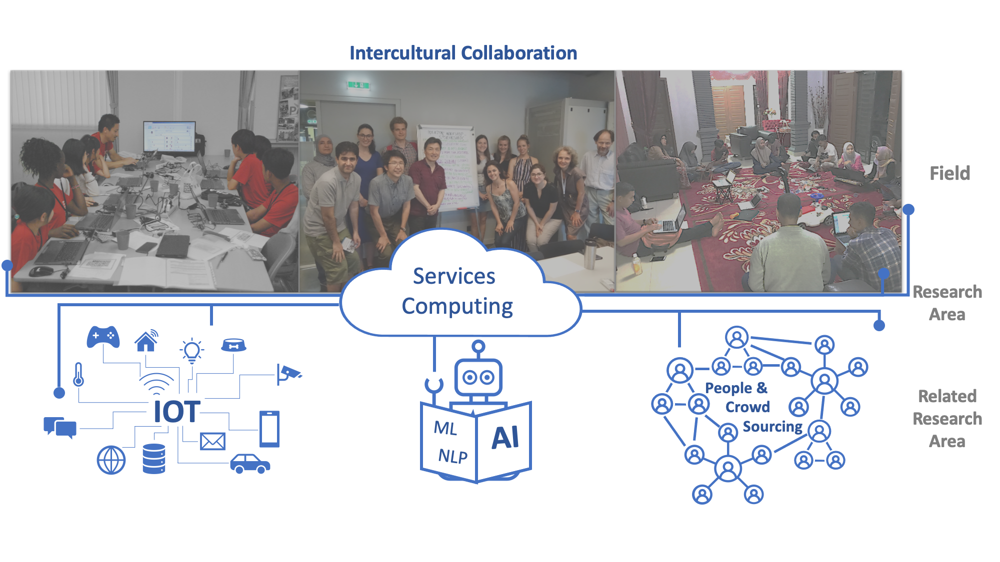

IoTのセンサやアクチュエータ、AIのソフトウェア、さらにはクラウドソーシング上の人々など社会のあらゆる知能の要素をWebサービス化し、 それらを組み合わせて連携する技術を研究し、社会の実問題を解決する社会知能の実現を目指します。
研究室のメイントピックはサービスコンピューティングで、インターネット上のWebサービス/クラウド/マイクロサービスを組み合わせて、 新しいサービスを構築する技術や方法論を研究しています。
これらの研究を応用して、異なる文化を持つ人々の協働作業を可能とする異文化コラボレーション支援に取り組み、多文化共生社会の実現に貢献しています。
